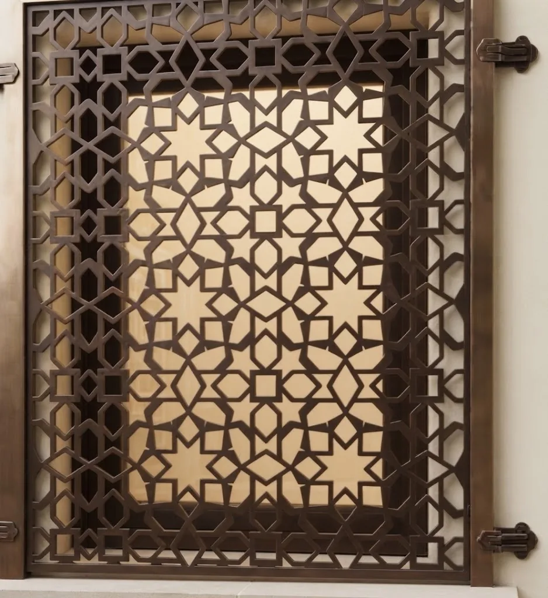
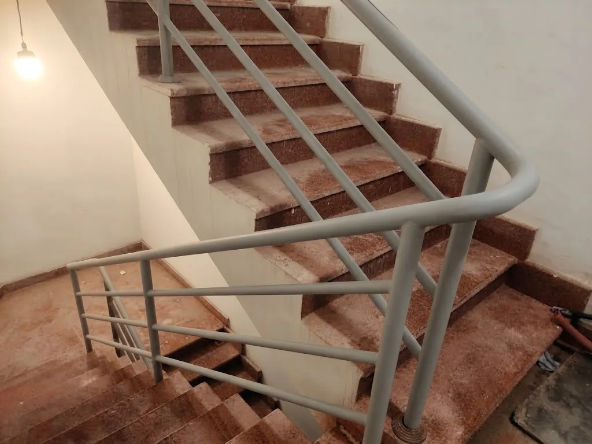

وصف وصور
حدد الخدمة والمدينة وأرسل صور المكان.

أعمال حديد في مكة وجدة
ALWALID يقدم أعمال الأبواب والشبابيك والسلالم والدرابزين والبرجولات والمظلات والهناجر والديكور والقواعد الحديدية حسب تفاصيل الموقع والمقاس.
خدمات ALWALID
لكل خدمة صفحة مستقلة تشرح اعتبارات القياس والتجهيز والصور المرتبطة بها.

حمايات وتكوينات حسب أبعاد الفتحة.

أبواب مداخل بتفاصيل مرتبطة بالاستخدام.

حواجز ومسارات حديدية للسلالم.

هياكل خارجية للجلسات والساحات.

تغطيات وإنشاءات معدنية للمواقع.

فواصل وتكوينات معدنية داخلية وخارجية.

قواعد تُراجع حسب الوحدة والسطح.
منهج واضح
لا نختار تكوين القطعة منفصلًا عن المكان. اتجاه الحركة، المساحة، نقاط الربط، وطبيعة الاستخدام هي عناصر تسبق الشكل النهائي.
حدد الخدمة والمدينة وأرسل صور المكان.
نناقش المقاس والتفاصيل والحاجة إلى المعاينة.
تُعتمد التفاصيل قبل التصنيع والتركيب.
معرض بصري
صور مصنفة حسب نوع العمل، من دون نسبتها إلى عميل أو موقع محدد لعدم توفر بيانات موثقة للمشروعات.
معلومات عملية
تعتمد التفاصيل النهائية على المقاس والموقع والاستخدام، لذلك تفيد الصور والقياسات الأولية عند التواصل.
أرسل صور المكان والمقاسات المتوفرة وموقع العمل في مكة أو جدة، وسنراجع المعلومات قبل توضيح الخطوة التالية.